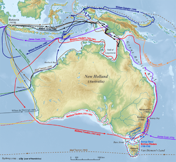
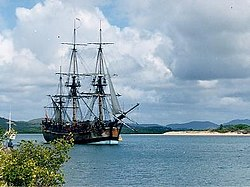
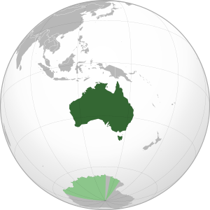

Термин «Австралия» (англ. Australia, [əˈstɹæɪljə, -liə] в австралийском английском) происходит от лат. austrālis («южный»). В разговорной речи австралийцев для обозначения Австралии используется слово Oz. Для обозначения прилагательного «австралийский» австралийцами используется слово Aussie ([ˈɒzi]).Легенды о Неведомой Южной земле (лат. Terra Australis Incognita) — «неизвестной земле на юге» — восходят к временам Римской империи и были обычным явлением в средневековой географии, несмотря на то, что не базировались на каких-либо знаниях о самом континенте.Самыми ранними задокументированными сведениями об использовании в английском языке слова «Australia» были написанные в 1625 году «Сведения об Аустралиа-дель-Эспириту-Санту, записанные мастером Халклайтом» (англ. A note of Australia del Espíritu Santo, written by Master Hakluyt) и опубликованные Самуэлем Пурчасом[en] в Hakluytus Posthumus, где испанское название Аустралиа-дель-Эспириту-Санту (исп. Australia del Espíritu Santo), данное острову в архипелаге Новые Гебриды, было искажено до «Australia». Прилагательное «Australische» также использовалось голландскими чиновниками Батавии (современная Джакарта) для обозначения всех новооткрытых с 1638 года южных земель. Слово «Australia» было использовано в переведённой на английский язык книге французского писателя-утописта Габриэля де Фуаньи «Приключения Жака Садера, его путешествие и открытие Астральной Земли» (фр. Les Aventures de Jacques Sadeur dans la Découverte et le Voyage de la Terre Australe; 1676). По отношению ко всей южной части Тихого Океана этот термин использует Александр Далримпл, шотландский географ, в своей книге «Историческая коллекция путешествий и открытий в южной части Тихого океана» (англ. An Historical Collection of Voyages and Discoveries in the South Pacific Ocean; 1771). В конце XVIII века термин используется ботаниками Джорджем Шоу и Джеймсом Эдвардом Смитом для обозначения австралийского континента в их книге «Зоология и ботаника Новой Голландии» (англ. Zoology and Botany of New Holland; 1793), а также на карте 1799 года, принадлежавшей Джеймсу Уилсону[en].Название «Australia» стало популярным после опубликования в 1814 году «Путешествия в Terra Australis» капитана Мэтью Флиндерса, который является первым человеком, обогнувшим Австралийский континент. При её подготовке Флиндерс убедил своего патрона, Джозефа Бэнкса, использовать термин Terra Australis, как более известный публике. Флиндерс сделал это, указав:Если бы я позволил себе любое новшество, то это было бы преобразование названия континента в «Australia», так как оно и более приятное для уха, и сочетается с именами других великих частей света.Оригинальный текст (англ.)Это единственное употребление слова «Australia» в тексте; но в Приложении III книги Роберта Броуна «Общие сведения, географические и систематические, о ботанике Терра Аустралис» (англ. General remarks, geographical and systematical, on the botany of Terra Australis; 1814) повсеместно используется прилагательное «Australian» и эта книга является первым задокументированным использованием этого слова. Несмотря на распространённое заблуждение, книга не сыграла особой роли в принятии слова «Australia» для названия континента — это название было принято в течение последующих десяти лет после выхода книги. Лаклан Маккуори, губернатор Нового Южного Уэльса, использовал это название в официальных посланиях в Англию, а 12 декабря 1817 года рекомендовал Министерству по делам колоний Британской империи официально принять его. В 1824 году Британское адмиралтейство окончательно утвердило это название континента.
Предки австралийских аборигенов появились в Австралии 40—60 тыс. лет назад (по другим данным— около 70 тыс. лет назад). Люди прибыли в Австралию по морю в то время, когда Новая Гвинея и Тасмания были частью континента, что делает их самыми ранними морскими путешественниками в мире. Заселение континента людьми началось 42—48 тыс. лет назад.Самые ранние человеческие останки найдены на озере Мунго, высохшем озере на юго-востоке штата Новый Южный Уэльс. Эти останки являются одним из старейших найденных на Земле примеров кремации, что указывает на раннее существование религиозных ритуалов среди австралийских аборигенов. Искусство аборигенов считается старейшей продолжающейся традицией искусства в мире[30]. Его возраст оценивают в 30 000 лет и его можно встретить по всей территории Австралии (в частности, на Улуру и в Национальном парке Какаду). С точки зрения возраста и изобилия рисунков, наскальная живопись в Австралии сопоставима с пещерами Ласко и Альтамира в Европе. В период 10—12 тыс. лет до нашей эры Тасмания изолируется от материка, и некоторые каменные технологии не смогли достичь тасманийских аборигенов (например, использование бумеранга)[35]. Во время древнейшего периода истории Австралии в юго-восточной Австралии часто происходили извержения вулканов. В юго-восточной Австралии, на озере Кондах в штате Виктория, найдены полупостоянные поселения с большими запасами продовольствия. На протяжении веков макасары торговали с аборигенами Австралии, в частности с людьми йолнгу на северо-востоке Арнем-Ленда.
Некоторые авторы пытались доказать, что европейцы посетили Австралию ещё в XVI веке. Кеннет Макинтайр[en] и другие историки утверждали, что португальцы тайно открыли Австралию в 20-е годы XVI века[38]. Наличие на картах Дьепа[en] надписи «Жав-Ля-Гранд»[en] (фр. Jave La Grande) часто воспринималось ими как доказательство «португальского открытия». Тем не менее, карты Дьепа отражают незавершённое состояние географических знаний той эпохи, как фактических, так и теоретических[39]. Хотя теории визитов европейцев до XVII века продолжают привлекать много интереса в Австралии и других странах, они, как правило, считаются спорными и недостаточно доказуемыми.Открытие Австралии произошло в 1606 году, когда Виллем Янсзон на корабле Дайфкен высадился на побережье Австралии[40], назвав его Новой Голландией и объявив владением Нидерландов (голландцами она никогда не осваивалась). В том же году испанская экспедиция Педро Фернандеса Кироса высадилась на Новых Гебридах и, полагая, что это — южный континент, назвала его Южная Земля Святого Духа (исп. Austrialis del Espiritu Santo)[41][42]. Позднее в этом же году заместитель Кироса Луис Ваэс де Торрес проплыл через Торресов пролив и, возможно, увидел северное побережье Австралии[43].

В 1642 году голландец Абел Тасман совершил путешествие, в ходе которого открыл Землю Ван-Димена (позже названную Тасманией) и Новую Зеландию, чем совершил значительный вклад в исследование Австралии. Он проплыл мимо восточного побережья Австралии к южному побережью Новой Гвинеи в 1644 году, когда совершал своё второе путешествие. Он пропустил Торресов пролив между Новой Гвинеей и Австралией и продолжил плыть на запад вдоль австралийского побережья, и в конечном итоге, благодаря ему, на картах было отображено западное побережье Австралии[44][45].К 50-м годам XVII века, благодаря голландским мореплавателям, очертания Австралии были достаточно отчётливо прорисованы на картах. За исключением голландских исследований на западном побережье, Австралия оставалась неисследованной до первого плавания Джеймса Кука. Первоначально идею основать колонию для изгнанных осуждённых в Южном океане или Terra Australis предложил Джон Калландер[en]. Он сказал:Этот мир должен предоставить нам совершенно новые вещи, так как до сих пор у нас было настолько мало знаний о нём, как будто он находится на другой планете[46].Оригинальный текст (англ.)[показать]В 1769 году лейтенант Джеймс Кук, командовавший кораблём Индевор (англ. HMS Endeavour), путешествовал на Таити, чтобы увидеть прохождение Венеры по диску Солнца. Кук также исполнял секретные инструкции Адмиралтейства по поиску Южного континента[47]:
Первая британская колония на континенте, Новый Южный Уэльс, была основана 26 января 1788 года, когда Артур Филлип привёл Первый флот в Порт-Джэксон[49]. Этот день стал впоследствии национальным праздником — днём Австралии. Земля Ван-Димена (современная Тасмания) была заселена в 1803 году и получила статус отдельной колонии в 1825 году[50]. Соединённое Королевство формально объявило западную часть Австралии своей в 1828 году[51], начав таким образом владеть всем континентом. Со временем из частей Нового Южного Уэльса образовывались отдельные колонии: Южная Австралия в 1836 году, Виктория в 1851, а Квинсленд — в 1859 году[52]. Северная территория была основана в 1911 году путём выделения части территорий Южной Австралии[53]. Южная Австралия, Виктория и Западная Австралия основывались как так называемые «свободные колонии», то есть туда никогда не ввозили заключённых[54], однако в последние две колонии вскоре тоже начали ввозить заключённых[en][55][56]. Нежелание жителей Нового Южного Уэльса принимать осуждённых привело к окончанию ввоза заключённых в эту колонию; последний корабль с осуждёнными прибыл в 1848 году[57] (однако последний корабль с заключёнными прибыл в Австралию 10 января 1868 года, в штат Западная Австралия).

Численность коренного населения, которая составляла от 750 000 до 1 000 000 человек в начале заселения Австралии европейцами[58], резко снизилась за 150 лет после начала заселения, в основном из-за инфекционных заболеваний, принесённых белыми[59]. Автор нескольких книг по защите прав и истории аборигенов Бейн Этвуд полагает, что программа «Украденные поколения» возможно способствовала снижению количества аборигенов Австралии[60]. Такая интерпретация истории аборигенов оспаривается многими консерваторами, такими как бывший премьер-министр Австралии Джон Говард, и считается ими преувеличенной или сфабрикованной по политическим или идеологическим причинам[61]. Дебаты вокруг «Украденных поколений» в Австралии получили название «Исторические войны»[en][62]. Федеральное правительство получило право принимать законы по отношению к аборигенам после референдума[en] в 1967 году[63]. Права аборигенов на землю[en] не были признаны до 1992 года, когда Высокий суд в ходе дела Мабо против Квинсленда (2)[en] отменил понимание Австралии как terra nullius («ничейная земля») до заселения европейцами[64]. В начале 50-х годов XIX века в Австралии произошла золотая лихорадка[65]. Позже, в 1854 году произошло Эврикское восстание против сборов денег за лицензии на работу в горном промысле, бывшее одним из первых выражений гражданского неповиновения[66]. Между 1855 и 1890 годами шесть колоний индивидуально получили ответственное правительство, управляющее большей частью дел колонии, при этом те оставались в составе Британской империи[67]. Министерство по делам колоний Британской империи в Лондоне сохранило свой контроль над некоторыми вопросами, в частности иностранными делами[68], обороной[69] и международным судоходством.
1 января 1901 года австралийские колонии договорились объединиться в федерацию — Австралийский Союз (также известный как Австралийское Содружество)[70]. Подготовка этого шага заняла около десяти лет переговоров, консультаций, а также голосований в колониальных парламентах. В 1907 году молодая нация получила статус доминиона Британской империи. В 1911 году из земель штата Новый Южный Уэльс была выделена территория для строительства будущей столицы — Канберры. Со дня основания федерации и до завершения первых правительственных построек в Канберре (1901—1927), столичные функции выполнял Мельбурн[71]. В 1911 году из северных территорий штата Южная Австралия была образована Северная территория[72]. В 1914 году Австралия добровольно приняла участие в Первой мировой войне на стороне Британской империи[73][74]. Во время войны австралийцы приняли участие во многих крупных сражениях на Западном фронте[75]. Из примерно 416 тысяч австралийцев, принявших участие в войне, около 60 тысяч были убиты, а 152 тысячи — ранены[76]. Многие австралийцы считают поражение Австралийско-новозеландского армейского корпуса (АНЗАК) под Галиполи моментом рождения нации, её первым крупным военным действием[77][78]. Аналогичным по влиянию событием считается битва за Кокоду в 1942 году[79].
В соответствии с Вестминстерским статутом единственной конституционной связью между Австралией и Великобританией остался общий глава государства — британский монарх. Австралия приняла его[en] в 1942 году[80], но дата принятия была официально обозначена 1939 годом для того, чтобы подтвердить обоснованность законодательства, принятого парламентом Австралии во время Второй мировой войны[81][82]. Шок от поражения Британии в Азии в 1942 году и угроза японского вторжения стали причинами сближения Австралии и США[83]. С 1951 года, по условиям договора АНЗЮС, Австралия становится формальным военным союзником США[84].После Второй мировой войны в Австралии начала поощряться иммиграция из Европы. С 1970-х годов, после отмены политики «Белая Австралия», повысился уровень иммиграции из Азии[85]. В результате изменились демографические данные Австралии, культура и самооценка австралийцев (оценка нации в целом)[86]. В 1986 году был принят Акт Австралии[en], по которому было отменено верховенство британского парламента над парламентами отдельных австралийских штатов и верховенство британского суда[87].Во время конституционного референдума 1999 года 55 % австралийцев отклонило проект по преобразованию Австралии в республику[88]. Со времени избрания Гофа Уитлэма в 1972[89] до начала 2000-х годов австралийская внешняя политика стала развивать связи с другими странами Тихоокеанского региона, сохраняя при этом тесные связи с традиционными союзниками и торговыми партнёрами Австралии[90].

Австралийский Союз — государство в Южном полушарии площадью 7 692 024 км²[91]. Австралия является шестым по площади государством в мире после России, Канады, Китая, США и Бразилии, занимая около 5 % поверхности суши Земли[92]. Также является крупнейшим по территории государством, полностью расположенном в Южном полушарии. В него входят: материк Австралия (включая остров Тасмания) площадью 7 659 861 км²[91] и другие прибрежные острова площадью 32 163 км²[91]. Под контролем Австралии находятся несколько внешних территорий: Кокосовые (Килинг) острова площадью 14 км²[93], остров Рождества площадью 135 км²[94], острова Ашмор и Картье площадью 199 км²[95], территория островов Кораллового моря площадью 7 км²[96] (площадь акватории около 780 тыс. км²), остров Херд и острова Макдональд площадью 372 км² (входят в состав Австралийской антарктической территории)[97], остров Норфолк площадью 35 км²[98] и Австралийская антарктическая территория площадью 5 896 000 км²[99] (суверенитет Австралии над этой территорией не признаётся большинством стран мира)[100]. Общая площадь всех внешних территорий 5 896 762 км² (без Антарктической территории — 762 км²)Северное и восточное побережья Австралии омывают моря Тихого океана: Арафурское, Коралловое, Тасманово, Индийского океана — Тиморское; западное и южное — Индийский океан. Близ Австралии расположены крупные острова Новая Гвинея и Тасмания. Вдоль северо-восточного побережья Австралии более чем на 2000 километров тянется самый большой в мире коралловый риф — Большой Барьерный риф[101]. Австралия простирается с запада на восток почти на 4000 километров, а с севера на юг — примерно на 3860 км[102]. Крайними точками материка являются: на севере — мыс Йорк (10° ю. ш.), на юге — мыс Саут-Ист-Кейп (43° ю. ш.), на западе — мыс Стип-Пойнт (114° в. д.), на востоке — мыс Байрон (154° в. д.)[102].Длина береговой линии Австралии составляет 59 736 км (из них материковой части — 35 877 км, островной — 23 859 км)[103], а площадь исключительной экономической зоны — 8 148 250 км²[104].
Вверх